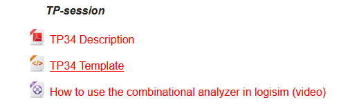
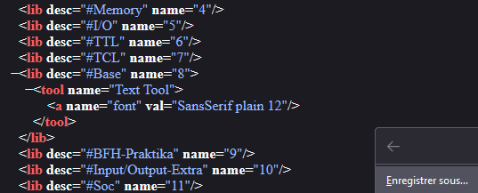

Cette section concerne plus le TP3/4 en lui-même que Logisim. Si tu cherches des tips Logisim, tu en trouveras sur cette page.
Des instructions plus précises pour télécharger Logisim sont disponibles sur le Moodle
Logisim est un logiciel libre disponible librement sur Github. En classe, on utilise la dernière version : 3.7.2
Télécharger LogisimOn ne doit pas faire le TP from scratch. Un modèle nous est donnée, on doit commencer par là.
Tu peux télécharger le TP depuis le Moodle ou par ce lien (il est sécure mais si tu préfères go Moodle).
Depuis Moodle, le lien n'est pas un lien de téléchargement. Tu le trouveras tout en bas de la semaine actuelle :
En cliquant sur ce lien, ton navigateur chargera directement le texte sauvegardé dans le fichier. Pas de panique, il suffit de faire un clic droit puis de choisir "Enregistrer sous..."
Attention à bien sauvegarder le fichier en .circ pour l'ouvrir avec Logisim simplement!
Télécharger le templatePour rendre le projet, rends-toi sur le site de rendu. Il faudra te connecter au VPN de l'EPFL (voir les différentes possibilités ici).